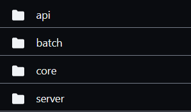
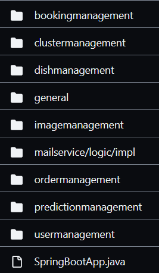

<!doctype html>
<html>
	<head>
		<meta charset="utf-8">
		<meta name="viewport" content="width=device-width, initial-scale=1.0, maximum-scale=1.0, user-scalable=no">

		<title>Hexagonal Architecture in practice</title>

		<link rel="stylesheet" href="dist/reset.css">
		<link rel="stylesheet" href="dist/reveal.css">
		<link rel="stylesheet" href="dist/theme/night.css">

		<!-- Theme used for syntax highlighted code -->
		<link rel="stylesheet" href="plugin/highlight/monokai.css">
		<link rel="stylesheet" href="css/custom.css">
	</head>
	<body>
		<div class="reveal">
			<div class="slides">
				<section data-markdown data-separator-vertical="^--$">
					<script type="text/template">
						Screaming architecture<!-- .element class="r-fit-text"-->
						--
						> When you look at the top-level directory structure,
						> and the source files in the highest-level package,
						> do they scream "Health Care System" or "Accounting system"
						> or "Inventory Management System"?

						Robert C. Martin,
						Clean Architecture: A Craftsman's Guide to Software Structure and Design<!-- .element class="cyan"-->
						--
						### What does this system do?

						<div class="r-hstack gap1">
							
							
						</div>

						<!-- .element class="fragment"-->
						--
						### Why is this a problem?

						* Harder to onboard new developers.
						* Imagine we have 20+ microservices...
						* Are technical aspects (server, batch) really that important?
						* Can architecture tell programmers where to put a new code?
						--
						What does this system do?

						
						--
						### Can we scream louder?

						Hexagonal architecture

						
						--
						Make entities and use cases first class citizens

						
						--
						Most important parts should be the easiest to reach

						
					</script>
				</section>
			</div>
		</div>

		<script src="dist/reveal.js"></script>
		<script src="plugin/notes/notes.js"></script>
		<script src="plugin/markdown/markdown.js"></script>
		<script src="plugin/highlight/highlight.js"></script>
		<script>
			// More info about initialization & config:
			// - https://revealjs.com/initialization/
			// - https://revealjs.com/config/
			Reveal.initialize({
				hash: true,
				slideNumber: 'c/t',
				// Learn about plugins: https://revealjs.com/plugins/
				plugins: [ RevealMarkdown, RevealHighlight, RevealNotes ]
			});
		</script>
	</body>
</html>
